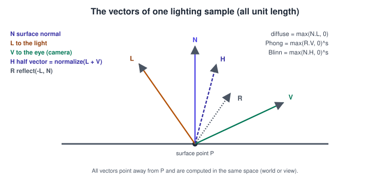
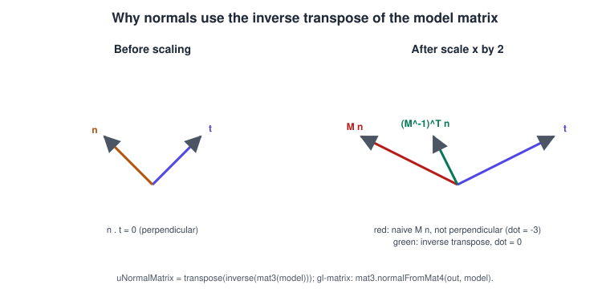
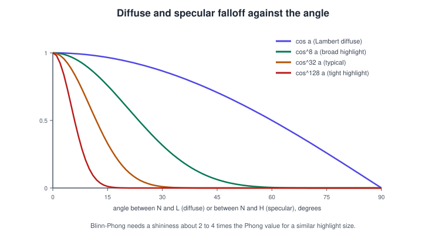
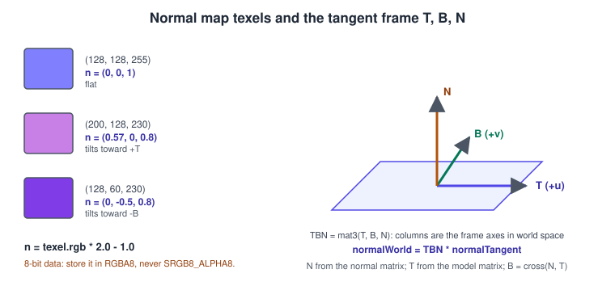
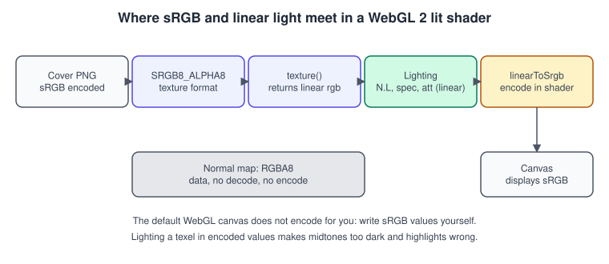
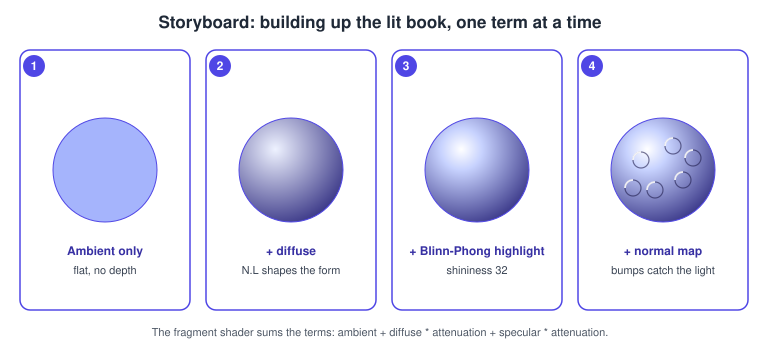

Lighting in WebGL Shaders
|
This content was generated with the assistance of AI and should be verified against the official documentation before being relied on in production. |
WebGL has no lights. There is no gl.enable(gl.LIGHT0), no material state and no fixed-function lighting: the fragment shader
receives a position, a normal and a texture colour and computes the colour that results. That freedom is also the reason lighting
is a good first real shader to write. Once you have written the diffuse and specular terms, three.js materials, glTF PBR and game
engine lighting stop being mysterious: they are the same vectors with a better model.
The facts were checked in November 2026 against the WebGL 2.0 specification (editor’s draft dated 2026-06-30), the GLSL ES 3.00
specification and MDN. Everything here is WebGL 2 (#version 300 es); the WebGL 1 differences are one-line notes. The code uses
glMatrix 3.4.3 from the jsDelivr CDN for the matrices and runs in any evergreen browser (Chrome, Edge,
Firefox, Safari 15 and iOS 15 or later) served from a local web server.
This is the third step of the raw WebGL track: the textured book-cover quad of Textures and Samplers in WebGL becomes a lit, rotating book with a cover texture and a normal map. The model, view and projection matrices come from Transforms and Cameras. The API-neutral theory is in Lighting and Shading Models, and the OpenGL twin of this page is Lighting with Blinn-Phong in OpenGL with Materials and Normal Mapping in OpenGL.
The vectors of a lighting sample

Every term of the classic model is a dot product of unit vectors, all computed in the same space (world space in the example below, view space in many tutorials). Mixing spaces is the most common cause of lighting that moves with the camera or looks wrong on rotation.
| Vector | Meaning |
|---|---|
|
Surface normal at the shaded point. |
|
Unit vector from the surface point to the light: |
|
Unit vector from the surface point to the camera: |
|
The half vector |
|
The reflection |
The result is a sum of terms: ambient (a constant to keep shadows from going black), diffuse (matte scattering, independent of the viewer) and specular (the highlight, which depends on the viewer).
Normals
A normal is a unit vector perpendicular to the surface. WebGL gets it from you: it is a vertex attribute (aNormal) that
your mesh data must provide, or that you compute from the triangles.
-
Flat shading: every vertex of a face carries the face normal (what a box needs). Vertices on the edge of a box therefore appear several times, once per face, with different normals; that is why the cube in the example has 24 vertices, not 8.
-
Smooth shading: each vertex carries the average of the normals of its triangles, and the rasteriser interpolates it. The interpolated vector is no longer unit length, so normalise in the fragment shader even if you normalised in the vertex shader.
The normal matrix

A normal is not a position: multiplying it by the model matrix \( M \) is correct only if \( M \) is a rotation plus a uniform scale. Under non-uniform scale or shear it ends up not perpendicular any more. The correct transform is the inverse transpose of the upper-left 3 x 3 part of the model matrix:
\[ N_{ matrix } = \left( M_{3 \times 3}^{-1} \right)^{ T } \]
Compute it once per object on the CPU (glMatrix: mat3.normalFromMat4(out, model)) and pass it as a mat3 uniform. Inverting a
matrix per vertex in the shader works in WebGL 2 (inverse exists in GLSL ES 3.00) but is wasteful. After the transform,
normalise: a scaled matrix changes the length.
// vertex shader fragment: positions use the model matrix, normals use the normal matrix
vec4 world = uModel * vec4(aPosition, 1.0);
vec3 N = normalize(uNormalMatrix * aNormal);Source: GLSL ES 3.00 specification
Lambert diffuse
A matte surface scatters light equally in all directions, and the amount it receives depends on the angle between the surface and the light: perpendicular light is strongest, grazing light is weak, light from behind contributes nothing.
\[ I_{ diffuse } = \max( N \cdot L, \, 0 ) \cdot C_{ light } \cdot C_{ surface } \]
The max matters: without it, surfaces facing away would subtract light. The surface colour \( C_{ surface } \) is the albedo texture
value (cover texture) in linear space.
Specular: Phong and Blinn-Phong

The specular term simulates the highlight of a smooth surface. Two formulations are in common use:
-
Phong (1975): \( \max( R \cdot V, 0 )^{ s } \), with \( R = \text{ reflect }(-L, N) \).
-
Blinn-Phong (1977): \( \max( N \cdot H, 0 )^{ s } \), with \( H = \text{ normalize }(L + V) \).
The exponent \( s \) is the shininess: larger means a smaller, sharper highlight (the figure shows 8, 32 and 128). Blinn-Phong is
cheaper (no reflect), never produces the cut-off artefact of Phong at grazing angles, and is what the fixed-function pipeline of
OpenGL ES 1.x did. Because the angle between \( N \) and \( H \) is about half the angle between \( R \) and \( V \), a Blinn-Phong
exponent two to four times larger gives a similar highlight size.
Gate the specular term with diffuse > 0.0 (or dot(N, L) > 0.0): otherwise a highlight appears on the unlit side.
Attenuation and light types
Real light falls with the square of the distance. A common game-friendly approximation uses constant, linear and quadratic terms:
\[ \text{ att } = \frac{ 1 }{k_c + k_l d + k_q d^2} \]
with, for example, \( k_c = 1, k_l = 0.09, k_q = 0.032 \) (a range of about 50 units). The light types differ only in how L
and the attenuation are formed.
// Point light: position in world space, attenuation by distance.
vec3 toLight = uLightPos - vWorldPos;
float dist = length(toLight);
vec3 L = toLight / dist;
float att = 1.0 / (1.0 + 0.09 * dist + 0.032 * dist * dist);
// Directional light (sun): constant L, no attenuation.
vec3 Ld = normalize(-uLightDirection); // direction the light travels, negated
// Spot light: a point light inside a cone, smooth edge between the inner and outer angle.
float theta = dot(L, normalize(-uSpotDirection));
float spotFade = clamp((theta - uOuterCos) / (uInnerCos - uOuterCos), 0.0, 1.0);
float attSpot = att * spotFade;Source: MDN: Lighting in WebGL
Several lights are an array of uniforms (or a uniform block, see Buffers, Attributes, Uniforms and VAOs) and a loop whose bound is a compile-time constant. Each light adds a full set of dot products per fragment, so budget lights as you budget texture reads.
Normal mapping

A normal map stores a perturbed normal per texel, so a flat polygon can look embossed, hammered or woven without more geometry. The usual encoding is tangent space: the stored vector is relative to the surface (blue means "straight out"), so the same map works on any orientation and survives animation.
-
Decode with
n = texture(uNormalMap, vUv).xyz * 2.0 - 1.0: channels in \( [0, 1] \) become components in \( [-1, 1] \). -
The map is data, not colour: upload it as
RGBA8, never asSRGB8_ALPHA8, and withcolorSpaceConversion: "none"when decoded throughcreateImageBitmap. -
Build a TBN matrix whose columns are the world-space tangent
T(the direction of increasing u), bitangentB(increasing v) and normalN. ThenN_world = normalize(TBN * n). -
Make
Torthogonal toNagain after the interpolation (Gram-Schmidt:T = normalize(T - dot(T, N) * N)) and takeB = cross(N, T). If your UVs are mirrored, flip the sign ofBwith a handedness attribute. -
The green channel has two conventions (OpenGL: +Y up, as in glTF; DirectX: +Y down). If bumps look inverted, flip G.
-
Averaging normals in lower mip levels shortens them. Renormalise the sampled vector in the shader.
Tangents normally come from the mesh (an attribute). When they are missing, a fragment-shader function can build the frame from
screen-space derivatives, which WebGL 2 has built in (WebGL 1 needs the OES_standard_derivatives extension):
// Cotangent frame from derivatives: no tangent attribute needed (Schueler, "Followup: Normal Mapping Without Precomputed Tangents").
mat3 cotangentFrame(vec3 N, vec3 p, vec2 uv) {
vec3 dp1 = dFdx(p);
vec3 dp2 = dFdy(p);
vec2 duv1 = dFdx(uv);
vec2 duv2 = dFdy(uv);
vec3 dp2perp = cross(dp2, N);
vec3 dp1perp = cross(N, dp1);
vec3 T = dp2perp * duv1.x + dp1perp * duv2.x;
vec3 B = dp2perp * duv1.y + dp1perp * duv2.y;
float invmax = inversesqrt(max(dot(T, T), dot(B, B)));
return mat3(T * invmax, B * invmax, N);
}sRGB versus linear light

Lighting arithmetic is only correct on linear quantities (twice the light is twice the number), but images and screens use the nonlinear sRGB encoding. The consistent workflow has four rules:
-
Decode colour textures to linear. In WebGL 2 upload colour images as
SRGB8_ALPHA8: the hardware decodes on every texel read, before filtering. In WebGL 1 decode in the shader (approximatelypow(c, vec3(2.2))) or useEXT_sRGB. -
Light in linear space, with linear light colours and constants.
-
Encode the result to sRGB when writing to the canvas. The default WebGL drawing buffer is treated as sRGB and is not encoded for you. Use the exact piecewise function (as in the example) or the approximation
pow(c, vec3(1.0 / 2.2)). -
Keep data textures raw: normal, roughness and metalness maps are
RGBA8and untouched.
The WebGL specification also exposes gl.drawingBufferColorSpace (default "srgb", optionally "display-p3") to select the colour
space of the canvas; it declares the space of the output but does not do the encoding for you. three.js automates all of this with
texture.colorSpace and renderer.outputColorSpace; see
three.js Textures and Colour Management. Tone mapping for HDR light values is
in Color Spaces, HDR and Tone Mapping.
Building up the lit book

When a lighting shader looks wrong, add the terms one at a time exactly as above: output vec3(ambient) first, then add diffuse and
check that the unlit side is dark, then the highlight, then the normal map. Output intermediate values directly as the colour: writing N * 0.5 + 0.5 to the output visualises the normals, which is the quickest way to find a missing normal matrix or a wrong tangent.
A complete example: the lit, rotating book
The program draws a box of half extents 0.6 x 0.9 x 0.2 (a book) with the cover texture on every face, a procedural tangent-space
normal map (leather grain and a groove frame, generated on the CPU so that no extra file is needed), a point light and Blinn-Phong
shading. Press N to toggle the normal map. Save it as index.html next to bookshelf-cover.png and serve it from a local web server.
<!doctype html>
<html lang="en">
<head>
<meta charset="utf-8">
<title>Bookshelf: lit rotating book</title>
<style>
html, body { margin: 0; height: 100%; background: #0f172a; }
canvas { width: 100%; height: 100%; display: block; }
</style>
</head>
<body>
<canvas id="gl"></canvas>
<script type="module">
import { mat3, mat4 } from "https://cdn.jsdelivr.net/npm/gl-matrix@3.4.3/+esm";
const canvas = document.getElementById("gl");
const gl = canvas.getContext("webgl2", { antialias: true });
if (!gl) throw new Error("WebGL 2 is not available in this browser");
// ---------------------------------------------------------------- shaders
const vertexSource = `#version 300 es
layout(location = 0) in vec3 aPosition;
layout(location = 1) in vec3 aNormal;
layout(location = 2) in vec3 aTangent;
layout(location = 3) in vec2 aUv;
uniform mat4 uModel;
uniform mat4 uViewProjection;
uniform mat3 uNormalMatrix;
out vec3 vWorldPos;
out vec2 vUv;
out mat3 vTBN;
void main() {
vec4 world = uModel * vec4(aPosition, 1.0);
vWorldPos = world.xyz;
vUv = aUv;
vec3 N = normalize(uNormalMatrix * aNormal);
vec3 T = normalize(mat3(uModel) * aTangent);
T = normalize(T - dot(T, N) * N); // re-orthogonalise
vec3 B = cross(N, T);
vTBN = mat3(T, B, N);
gl_Position = uViewProjection * world;
}`;
const fragmentSource = `#version 300 es
precision highp float;
uniform sampler2D uAlbedo; // SRGB8_ALPHA8: texture() returns linear colour
uniform sampler2D uNormalMap; // RGBA8: tangent-space data
uniform vec3 uLightPos;
uniform vec3 uLightColor;
uniform vec3 uViewPos;
uniform float uShininess;
uniform float uAmbient;
uniform bool uUseNormalMap;
in vec3 vWorldPos;
in vec2 vUv;
in mat3 vTBN;
out vec4 outColor;
vec3 linearToSrgb(vec3 c) {
return mix(c * 12.92, 1.055 * pow(c, vec3(1.0 / 2.4)) - 0.055, step(0.0031308, c));
}
void main() {
vec3 albedo = texture(uAlbedo, vUv).rgb;
vec3 N = normalize(vTBN[2]);
if (uUseNormalMap) {
vec3 n = normalize(texture(uNormalMap, vUv).xyz * 2.0 - 1.0);
N = normalize(vTBN * n);
}
vec3 toLight = uLightPos - vWorldPos;
float dist = length(toLight);
vec3 L = toLight / dist;
vec3 V = normalize(uViewPos - vWorldPos);
vec3 H = normalize(L + V);
float att = 1.0 / (1.0 + 0.09 * dist + 0.032 * dist * dist);
float diffuse = max(dot(N, L), 0.0);
float specular = diffuse > 0.0 ? pow(max(dot(N, H), 0.0), uShininess) : 0.0;
vec3 light = uLightColor * att;
vec3 color = albedo * (uAmbient + diffuse * light) + 0.35 * specular * light;
outColor = vec4(linearToSrgb(color), 1.0);
}`;
function compile(type, source) {
const shader = gl.createShader(type);
gl.shaderSource(shader, source);
gl.compileShader(shader);
if (!gl.getShaderParameter(shader, gl.COMPILE_STATUS)) throw new Error(gl.getShaderInfoLog(shader));
return shader;
}
const program = gl.createProgram();
gl.attachShader(program, compile(gl.VERTEX_SHADER, vertexSource));
gl.attachShader(program, compile(gl.FRAGMENT_SHADER, fragmentSource));
gl.linkProgram(program);
if (!gl.getProgramParameter(program, gl.LINK_STATUS)) throw new Error(gl.getProgramInfoLog(program));
const loc = (name) => gl.getUniformLocation(program, name);
const uniforms = Object.fromEntries(
["uModel", "uViewProjection", "uNormalMatrix", "uAlbedo", "uNormalMap", "uLightPos", "uLightColor",
"uViewPos", "uShininess", "uAmbient", "uUseNormalMap"].map((n) => [n, loc(n)]));
// ---------------------------------------------------------------- geometry: a box with per-face frames
const half = [0.6, 0.9, 0.2];
const faces = [
{ n: [0, 0, 1], t: [1, 0, 0], b: [0, 1, 0] }, // front (the cover)
{ n: [0, 0, -1], t: [-1, 0, 0], b: [0, 1, 0] },
{ n: [1, 0, 0], t: [0, 0, -1], b: [0, 1, 0] },
{ n: [-1, 0, 0], t: [0, 0, 1], b: [0, 1, 0] },
{ n: [0, 1, 0], t: [1, 0, 0], b: [0, 0, -1] },
{ n: [0, -1, 0], t: [1, 0, 0], b: [0, 0, 1] },
];
const corners = [[-1, -1], [1, -1], [1, 1], [-1, 1]];
const vertexData = [];
const indexData = [];
faces.forEach((f, faceIndex) => {
for (const [sx, sy] of corners) {
const p = [0, 1, 2].map((i) => (f.n[i] + sx * f.t[i] + sy * f.b[i]) * half[i]);
vertexData.push(...p, ...f.n, ...f.t, (sx + 1) / 2, (sy + 1) / 2); // position, normal, tangent, uv
}
const o = faceIndex * 4;
indexData.push(o, o + 1, o + 2, o, o + 2, o + 3);
});
const vao = gl.createVertexArray();
gl.bindVertexArray(vao);
const vbo = gl.createBuffer();
gl.bindBuffer(gl.ARRAY_BUFFER, vbo);
gl.bufferData(gl.ARRAY_BUFFER, new Float32Array(vertexData), gl.STATIC_DRAW);
const stride = 11 * 4;
gl.enableVertexAttribArray(0); gl.vertexAttribPointer(0, 3, gl.FLOAT, false, stride, 0);
gl.enableVertexAttribArray(1); gl.vertexAttribPointer(1, 3, gl.FLOAT, false, stride, 12);
gl.enableVertexAttribArray(2); gl.vertexAttribPointer(2, 3, gl.FLOAT, false, stride, 24);
gl.enableVertexAttribArray(3); gl.vertexAttribPointer(3, 2, gl.FLOAT, false, stride, 36);
const ibo = gl.createBuffer();
gl.bindBuffer(gl.ELEMENT_ARRAY_BUFFER, ibo);
gl.bufferData(gl.ELEMENT_ARRAY_BUFFER, new Uint16Array(indexData), gl.STATIC_DRAW);
gl.bindVertexArray(null);
// ---------------------------------------------------------------- textures
const levelCount = (w, h) => Math.floor(Math.log2(Math.max(w, h))) + 1;
async function loadAlbedo(url) {
const bitmap = await createImageBitmap(await (await fetch(url)).blob(), {
imageOrientation: "flipY", premultiplyAlpha: "none",
});
const tex = gl.createTexture();
gl.bindTexture(gl.TEXTURE_2D, tex);
gl.texStorage2D(gl.TEXTURE_2D, levelCount(bitmap.width, bitmap.height), gl.SRGB8_ALPHA8, bitmap.width, bitmap.height);
gl.texSubImage2D(gl.TEXTURE_2D, 0, 0, 0, gl.RGBA, gl.UNSIGNED_BYTE, bitmap);
gl.generateMipmap(gl.TEXTURE_2D);
bitmap.close();
return tex;
}
// Height field -> tangent-space normals. Row 0 is v = 0 (no flip for typed arrays).
function createNormalMap(size = 256, strength = 6) {
const smooth = (a, b, x) => { const t = Math.min(Math.max((x - a) / (b - a), 0), 1); return t * t * (3 - 2 * t); };
const height = new Float32Array(size * size);
for (let y = 0; y < size; y++) {
for (let x = 0; x < size; x++) {
const u = x / size, v = y / size;
const grain = 0.5 + 0.25 * Math.sin(u * Math.PI * 48) * Math.sin(v * Math.PI * 48);
const d = Math.min(u, 1 - u, v, 1 - v);
const groove = smooth(0.05, 0.07, d) - smooth(0.08, 0.10, d); // a ridge at 5..10 % from the edge
height[y * size + x] = 0.3 * grain + groove;
}
}
const at = (x, y) => height[Math.min(Math.max(y, 0), size - 1) * size + Math.min(Math.max(x, 0), size - 1)];
const data = new Uint8Array(size * size * 4);
for (let y = 0; y < size; y++) {
for (let x = 0; x < size; x++) {
const dx = (at(x + 1, y) - at(x - 1, y)) * 0.5 * strength;
const dy = (at(x, y + 1) - at(x, y - 1)) * 0.5 * strength;
const len = Math.hypot(dx, dy, 1);
const i = (y * size + x) * 4;
data[i] = Math.round(((-dx / len) * 0.5 + 0.5) * 255);
data[i + 1] = Math.round(((-dy / len) * 0.5 + 0.5) * 255);
data[i + 2] = Math.round(((1 / len) * 0.5 + 0.5) * 255);
data[i + 3] = 255;
}
}
const tex = gl.createTexture();
gl.bindTexture(gl.TEXTURE_2D, tex);
gl.texStorage2D(gl.TEXTURE_2D, levelCount(size, size), gl.RGBA8, size, size); // RGBA8: data, not sRGB
gl.texSubImage2D(gl.TEXTURE_2D, 0, 0, 0, size, size, gl.RGBA, gl.UNSIGNED_BYTE, data);
gl.generateMipmap(gl.TEXTURE_2D);
return tex;
}
const albedoTex = await loadAlbedo("bookshelf-cover.png");
const normalTex = createNormalMap();
const sampler = gl.createSampler();
gl.samplerParameteri(sampler, gl.TEXTURE_MIN_FILTER, gl.LINEAR_MIPMAP_LINEAR);
gl.samplerParameteri(sampler, gl.TEXTURE_MAG_FILTER, gl.LINEAR);
gl.samplerParameteri(sampler, gl.TEXTURE_WRAP_S, gl.CLAMP_TO_EDGE);
gl.samplerParameteri(sampler, gl.TEXTURE_WRAP_T, gl.CLAMP_TO_EDGE);
// ---------------------------------------------------------------- state and loop
let useNormalMap = true;
window.addEventListener("keydown", (e) => { if (e.key === "n" || e.key === "N") useNormalMap = !useNormalMap; });
const model = mat4.create();
const view = mat4.create();
const projection = mat4.create();
const viewProjection = mat4.create();
const normalMatrix = mat3.create();
const eye = [0, 0.6, 3.4];
const lightPos = [1.8, 1.4, 2.2];
gl.enable(gl.DEPTH_TEST);
gl.enable(gl.CULL_FACE);
mat4.lookAt(view, eye, [0, 0, 0], [0, 1, 0]);
function frame(timeMs) {
const dpr = window.devicePixelRatio || 1;
const width = Math.round(canvas.clientWidth * dpr);
const height = Math.round(canvas.clientHeight * dpr);
if (canvas.width !== width || canvas.height !== height) { canvas.width = width; canvas.height = height; }
gl.viewport(0, 0, canvas.width, canvas.height);
gl.clearColor(0.06, 0.09, 0.16, 1);
gl.clear(gl.COLOR_BUFFER_BIT | gl.DEPTH_BUFFER_BIT);
mat4.perspective(projection, Math.PI / 4, canvas.width / canvas.height, 0.1, 50);
mat4.multiply(viewProjection, projection, view);
mat4.fromYRotation(model, Math.sin(timeMs / 1500) * 0.9); // sway back and forth
mat3.normalFromMat4(normalMatrix, model);
gl.useProgram(program);
gl.uniformMatrix4fv(uniforms.uModel, false, model);
gl.uniformMatrix4fv(uniforms.uViewProjection, false, viewProjection);
gl.uniformMatrix3fv(uniforms.uNormalMatrix, false, normalMatrix);
gl.uniform3fv(uniforms.uLightPos, lightPos);
gl.uniform3f(uniforms.uLightColor, 2.2, 2.0, 1.7); // warm desk lamp, linear values
gl.uniform3fv(uniforms.uViewPos, eye);
gl.uniform1f(uniforms.uShininess, 48);
gl.uniform1f(uniforms.uAmbient, 0.06);
gl.uniform1i(uniforms.uUseNormalMap, useNormalMap ? 1 : 0);
gl.activeTexture(gl.TEXTURE0);
gl.bindTexture(gl.TEXTURE_2D, albedoTex);
gl.bindSampler(0, sampler);
gl.uniform1i(uniforms.uAlbedo, 0);
gl.activeTexture(gl.TEXTURE1);
gl.bindTexture(gl.TEXTURE_2D, normalTex);
gl.bindSampler(1, sampler);
gl.uniform1i(uniforms.uNormalMap, 1);
gl.bindVertexArray(vao);
gl.drawElements(gl.TRIANGLES, indexData.length, gl.UNSIGNED_SHORT, 0);
requestAnimationFrame(frame);
}
requestAnimationFrame(frame);
</script>
</body>
</html>Source: MDN: Lighting in WebGL
Points worth noticing in the program:
-
The rotation is applied to the model only, so the light and the camera stay still and the highlight slides across the cover as the book sways.
uNormalMatrixis recomputed from the model matrix whenever it changes. -
The tangent attribute is a direction in model space; only the model matrix (not the view or projection matrix) takes it to world space, together with the normal.
-
The same sampler object serves both textures: they are both clamped and trilinear. It is bound to units 0 and 1.
-
uLightColorhas components above 1.0. That is legitimate in linear light; with a single-pass LDR output very high values simply clip, which is the motivation for tone mapping. -
For the
if (uUseNormalMap)branch the condition is uniform, so all fragments of a draw take the same side. It is cheap on every GPU.
If the book looks black, output N * 0.5 + 0.5 to check normals. If the highlight does not move with rotation, the normal matrix is
not being updated. If everything appears washed out or too dark, review the sRGB rules above.
Common mistakes
-
Light moves with the camera, or flips on rotation.
L,VandNare not in the same space. -
Not normalising after interpolation or after a matrix. Dot products stop being cosines.
-
Dark faces on a scaled object. A model matrix was used for normals instead of the normal matrix.
-
Highlight on the unlit side. Missing
diffuse > 0.0guard. -
Normal map looks inverted. Wrong green convention, wrong handedness of
B, or flipped UVs. -
Colour textures look dark and contrasty. sRGB data used as linear (uploaded as
RGBA8) or the output not encoded. -
Normal map colour is washed out or tinted. The normal map was uploaded as
SRGB8_ALPHA8or the browser applied colour conversion when decoding. -
Precision artefacts on mobile GPUs. World positions and light positions in
mediumplose accuracy; requesthighp, which is always available in vertex shaders and in fragment shaders on practically every WebGL 2 device. Querygl.getShaderPrecisionFormat(gl.FRAGMENT_SHADER, gl.HIGH_FLOAT)if you must be sure.
Performance notes
-
Move invariant work to the CPU: the normal matrix, light positions in view space, constant attenuation factors.
-
Do per-vertex work in the vertex shader when quality allows, per-fragment (Phong shading) when you want smooth highlights; the fragment cost grows with resolution, so lower the canvas resolution on slow devices (devicePixelRatio) before cutting features.
-
A light loop costs per light per fragment. For many lights use clustered or deferred shading (see Lighting and Shading Models), which in WebGL 2 means multiple render targets in Framebuffers and Render to Texture.
-
Avoid
powwith large dynamic exponents on mobile GPUs when a lookup texture or a cheaper approximation will do. -
Normal maps cost one extra texture fetch and a matrix multiply; store them compressed (see Extensions) and consider a two-channel format with the third component reconstructed (z = sqrt(1 - x² - y²)).
What the books say and where they are outdated
| Book | What it covers | Where it is outdated |
|---|---|---|
Parisi, WebGL: Up and Running (O’Reilly, 2012), chapter 3 |
Writes a Phong-style vertex and fragment shader by hand, with light and material uniforms, and uses three.js lights and materials. |
WebGL 1 shaders ( |
Dirksen, Learning Three.js (2nd ed., Packt, 2015), chapters 3 and 4 |
Ambient, point, spot, directional and hemisphere lights, |
|
Dirksen, Three.js Cookbook (Packt, 2015), chapters 4 and 5 |
Lighting, bump, normal and specular maps, custom shader recipes. |
Same renames as above; |
For the full list of corrections see What Changed Since Older Guides.
Recent changes
| When | Change |
|---|---|
Sep 2021 |
WebGL 2 shipped in Safari 15 and iOS 15: |
Oct 2024 |
|
2026 |
The WebGL 2.0 editor’s draft dated 2026-06-30 keeps the OpenGL ES 3.0 shading model described here. The successor, WebGPU, uses WGSL and the same lighting maths (see WebGPU Overview and Comparison). |